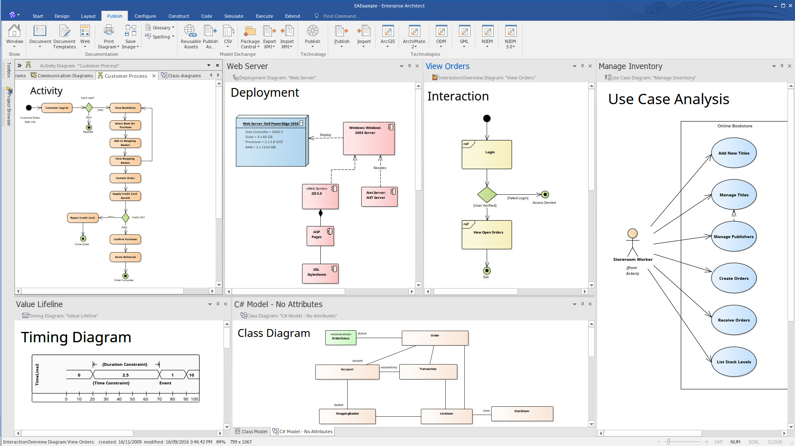

Enterprise Architect
Enterprise Architect on võimas modelleerimis- ja disainitööriist, mis toetab UML, BPMN ja mitmeid teisi standardeid.
Uppercase CASE-vahendid on tööriistad, mida kasutatakse peamiselt tarkvara analüüsi ja disaini etappides, näiteks nõuete haldamine, süsteemi modelleerimine ja disain.
Word, Draw.io.
Enterprise Architect on võimas modelleerimis- ja disainitööriist, mis toetab UML, BPMN ja mitmeid teisi standardeid.
IBM Rational Rose aitab luua visuaalseid mudeleid ja toetab tarkvaraarenduse varajasi etappe, pakkudes diagrammide loomist ja analüüsi.